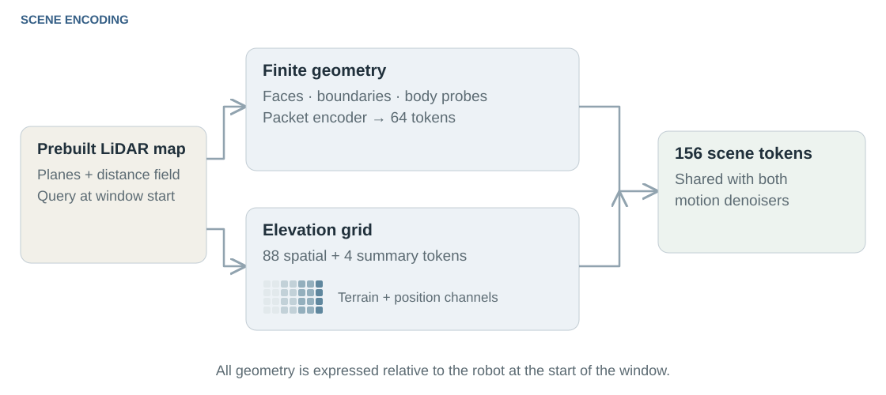
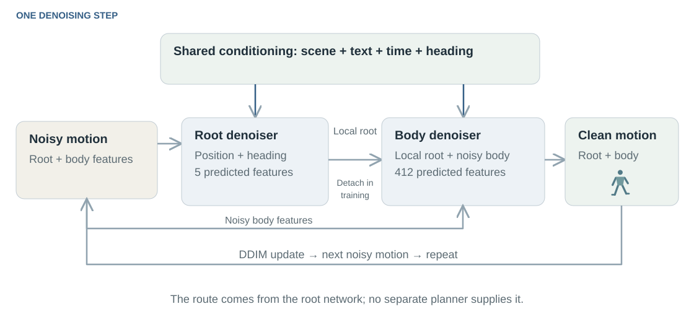
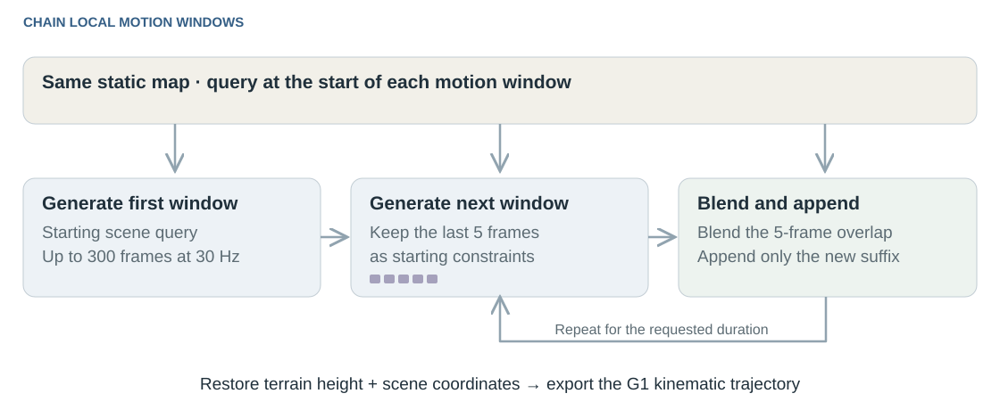

Technical report
Scene-Aware Humanoid Motion Generation
Abstract
A humanoid motion must fit the surrounding environment as well as describe a plausible movement. We present Scene-Kimodo, an extension of Kimodo that conditions whole-body motion generation for the Unitree G1 on LiDAR-derived geometry. A perception pipeline converts the scene into finite surfaces, boundaries, body-clearance probes, and a robot-centric elevation map. Encoders turn these representations into scene tokens that condition both the root and body denoisers alongside a text prompt. The model generates the route and corresponding body motion without a supplied path or waypoints. Terrain-relative coordinates separate large changes in ground elevation from the pose the model predicts, and overlapping motion windows allow longer courses to be assembled. This report describes the dataset, perception pipeline, model, and training procedure. The output is a kinematic motion sequence; tracking and physical execution are outside the present scope.
1. Introduction
Moving through an environment requires more than generating a plausible walking motion. A humanoid may need to move around a box, lift its feet onto a staircase, or change its body configuration to fit the available space. The route and the body motion must therefore agree with the surrounding geometry.
Kimodo generates human and humanoid motion from text and kinematic constraints, including poses, paths, and waypoints [1]. This provides a useful motion prior, but the pretrained model does not take scene perception as an input. A supplied path can guide the motion; choosing that path from observed geometry remains a separate problem.
We extend this model so that scene geometry can influence both where the robot moves and how its body moves along the route. The extension uses a compact representation derived from simulated LiDAR scans and is fine-tuned on scene-aligned obstacle and stair motions. The current implementation generates motion against a prebuilt, static map. It does not perform live onboard mapping or close a control loop around a physical robot.
2. Methodology
2.1 System overview
Scene-Kimodo takes a text prompt, an initial heading, and geometry queried from a LiDAR map. The geometry is expressed relative to the robot at the start of a motion window and encoded into scene tokens. Kimodo’s root denoiser uses these tokens to predict global position and heading; its body denoiser uses the same scene information and the predicted root motion to generate the rest of the pose sequence.
The model is trained on local windows of 2–10 seconds at 30 Hz. Longer motions are assembled from overlapping generated windows, with each new scene query anchored at the pose reached by the generated motion. After restoring terrain height and scene coordinates, the output is converted into a G1 root pose and joint-angle trajectory.
2.2 Scene-aligned dataset
Each training example pairs a motion with the geometry it traverses. All examples use the same prompt, “A humanoid robot walks forward through the scene.” The prompt therefore does not specify which side of an obstacle to take or describe the stair layout; those differences must come from geometry.
Obstacle courses
The Hard118 set contains 118 eight-second motions paired with 107 scenes containing zero, one, or two box obstacles. The courses include straight corridors, obstacles that permit either side, and layouts that require a particular route.
To create a target motion, we construct a smooth pelvis path that enters the required lane, passes the obstacle, and returns toward the centre line. The path maintains at least 0.5 m clearance from the obstacle footprint and is supplied to the pretrained G1 Kimodo model as a root-path constraint. The resulting motion is smoothed and checked in Isaac Lab [2] at the original frames and interpolated midpoints, excluding ordinary foot–ground contact. All 118 targets pass this check. The constructed path is used to create training targets; it is not an input to the final generator.
Stair courses
Stair targets come from physics rollouts of locomotion policies in procedurally generated Isaac Lab courses. The courses include ascent, descent, up–down, down–up, and flat walking, with variations in stair geometry, approach distance, landing length, speed, and starting pose. Most rollouts use the Instinct perceptive stair policy [3]; a smaller subset uses the ETH foothold-prediction policy [4].
We retain complete rollouts that remain upright, finish the course, avoid non-foot collisions, and satisfy checks on foot height, stair width, and sole support. Executed pelvis poses and joint positions become the targets, rather than the policies’ actions. These motions are converted from 50 Hz to Kimodo’s 30 Hz representation, and foot contacts are recomputed against the stair surfaces.
| Source | Distinct training motions | Training sequences after augmentation | Held-out motions |
|---|---|---|---|
| Obstacle courses | 103 | 103 | 15 |
| Stair courses | 204 | 408 | 16 |
| Total | 307 | 511 | 31 |
Only training stair motions are mirrored left-to-right. After preprocessing and before mirroring, the training cache contains approximately 82 minutes of motion: about 14 minutes of obstacle walking and 68 minutes of stair traversal. Motions sharing a scene stay in the same split. Each sampled window is paired with geometry queried at its starting pose.
2.3 From LiDAR scans to scene tokens
The perception pipeline produces two complementary views of the scene: a packet of finite geometric elements and a regular elevation grid. Both use the same robot-centred frame, so a surface’s position has the same meaning in the scene inputs and the motion window.

Build the scene maps
Obstacle scenes use RTX LiDAR scans. For axis-aligned stair scenes, an analytical ray caster reproduces the OS0 beam pattern at the exported scanner poses. First returns from the scanner poses are fused into a 5 cm voxel map. The mapping pipeline then constructs a finite plane map with outer boundaries and a sparse Euclidean signed-distance field (ESDF), which supplies distances and gradients relative to occupied space.
At each window start, these maps are queried in the current robot root frame. Training query poses are spaced 15 frames apart, or 0.5 seconds at 30 Hz. During generation, later queries instead use the pose reached by the preceding generated window.
Encode finite geometry
The geometry packet contains three types of element:
- Faces: surface position, orientation, extent, slope, fit quality, confidence, category, and observation age.
- Boundaries: outer-edge endpoints and lengths, with a reference to the parent face.
- Body probes: 63 samples attached to the G1 collision shell, carrying signed distance, clearance margin, ESDF gradient, and validity information.
The feature widths are 25, 8, and 19, respectively. Channels are standardized using training-split statistics and clipped to eight standard deviations. Separate projections and categorical embeddings identify the element types and body parts; validity masks distinguish padding from geometry. A cross-attention encoder compresses the variable-size packet into 64 tokens.
Encode elevation over the route
Upward-facing support planes are rasterized into a 2.5 cm elevation field. A connectivity rule marks cells reachable from the start through neighbouring height changes of at most 0.30 m. Averaging this reachable height over a 0.625 m square produces a smooth terrain ramp.
For each window, the field is resampled into an 88 × 64 grid with 0.10 m cells, covering 8.8 m forward–backward and 6.4 m laterally, starting 0.8 m behind the robot. Its four channels represent the ramp relative to the starting height, local height relative to the ramp, LiDAR observation coverage, and surfaces more than 0.25 m above reachable terrain.
The final encoder adds normalized forward and lateral coordinates as two input channels. A convolutional network produces 88 spatial tokens, one per 8 × 8-cell patch, and four summary tokens from pooled map features. Together with the finite-geometry packet, this gives 156 scene tokens.
Represent motion relative to the terrain
A staircase can change the robot’s absolute height by metres, even when its pose relative to the ground changes much less. We subtract the smooth ramp height under the pelvis from the root and joint heights and adjust vertical velocities consistently. The model then predicts motion relative to this local terrain level. Individual stair treads remain visible in the elevation input.
After generation, the ramp is sampled under the predicted pelvis path and added back. Large-scale rise and descent are therefore partly supplied by the geometry transform; the network predicts the pose and clearance relative to that ramp.
2.4 Perception-conditioned motion generation
We retain Kimodo’s pose representation and two-stage diffusion architecture [1]. Each frame contains 417 features: five describe the smoothed global root position and heading, and 412 describe joint positions, rotations, velocities, and four foot-contact values. A window is expressed with its initial smoothed root at the origin, initial heading at zero, and heights relative to the terrain ramp.
Training adds Gaussian noise using a 1,000-step cosine schedule. The denoiser receives the noisy motion, timestep, text embedding, initial heading, and scene tokens, and predicts the clean motion, x0. Generation starts from Gaussian noise and repeatedly refines it with DDIM [5]; the current course-generation configuration uses 100 denoising steps.

The root stage sees the complete noisy motion and predicts position and heading. That prediction is converted into local planar velocity, heading velocity, and root height. The body stage combines these local root features with the noisy body features to predict the remaining pose features. Concatenating both outputs gives the clean-motion estimate for that diffusion step.
The same scene tokens condition both stages, alongside text, diffusion time, and initial heading. Geometry tokens do not shift the pretrained model’s original text and motion positional indices; their spatial information comes from their features and the elevation grid’s patch positions. Each denoiser has 16 Transformer layers with width 1,024 and eight attention heads. The scene encoders add approximately 7.3 million parameters to the approximately 284-million-parameter Kimodo denoiser.
2.5 Training and joint fine-tuning
The final training phase updates both denoisers and both scene encoders together. It begins from staged initialization: the root network and scene encoders come from an obstacle-focused phase, while the body network comes from an earlier scene-conditioned run. The joint phase runs for 8,000 updates. As in the two-stage implementation, the body receives a detached local-root prediction during training; joint fine-tuning does not imply that body gradients flow through the root prediction.
Training objective
The reconstruction objective uses Kimodo’s pose-feature groups. This implementation applies Smooth L1 losses in physical units to root position, heading, joint positions, rotations, velocities, and contact labels, with weights 10, 2, 10, 10, 3, and 4. A forward-kinematics consistency term, weighted by 5, compares joint positions decoded from rotations with target positions.
Three additional terms provide scene and transition supervision:
- Terrain penetration: restore predicted joints to absolute height and penalize entry into the ground, stairs, or obstacles, using the simulation terrain geometry for supervision.
- Transition consistency: for windows with a preceding motion, apply extra reconstruction loss to the ten frames following the five-frame overlap.
- Scene-to-route supervision: a training-only head predicts three candidate pelvis paths from scene tokens. A winner-takes-all path and score loss encourages the encoder to retain route information. This head is not used to generate motion.
The objective penalizes penetration and reconstructs foot-contact labels, but it does not include an explicit two-sided foot-to-tread contact loss. In particular, a planted foot remaining above a tread is not directly penalized by a contact-height term.
Window and noise sampling
Training windows are sampled in a 40:60 mixture of obstacle and stair examples. Windows last 60–300 frames; half use the longest available duration, while the rest use a random valid length. Forty percent start at the beginning of a course. Of the mid-course windows, 30% remain unconstrained; the others receive a five-frame transition from the preceding target motion.
To train route selection when little motion information remains, 35% of timesteps are sampled from the high-noise range 900–999, and an independent 20% overwrite sets the timestep to 999. Text conditioning is dropped for 10% of examples. No target path or waypoint is supplied as a conditioning constraint during this final joint phase. Recorded paths still provide targets for reconstruction and the auxiliary route loss.
Optimization settings
Batch size: 32. Optimizer: Adam-atan2. Learning rates: 2 × 10−5 for Kimodo and 5 × 10−5 for scene modules, with a 300-update warmup and cosine decay to 20% of peak. Parameters and losses use FP32; Transformer forward passes use BF16 autocasting. The two parameter groups are clipped independently to gradient norm 1.0. An exponential moving average is maintained with decay 0.995.
2.6 Generating a complete course
The first window uses the starting pose to query scene geometry and establish its coordinate frame. The course duration determines the requested number of frames. No future reference poses, path, or waypoints are supplied. The root and body denoisers generate at most 300 frames from noise.

For a longer course, the next window overlaps the preceding output by five frames. These frames become native full-body and end-effector constraints at the start of the new window. The pose at the start of the overlap defines a new local frame and scene query. The model samples a new window, linearly blends the shared frames, and appends only the new suffix. This repeats until the requested duration is reached.
Each chunk is transformed back into the common sequence frame. The LiDAR ramp is then sampled under the assembled pelvis path and restored to root height, joint heights, and vertical velocities. Kimodo’s inverse representation and forward kinematics decode the motion, which is converted into a 36-value G1 trajectory: root position, root quaternion, and 29 actuated joint angles.
The result is a scene-conditioned kinematic reference motion. A tracker that executes this reference, and any feedback from physical execution, are separate work.
References
D. Rempe, M. Petrovich, Y. Yuan, et al. “Kimodo: Scaling Controllable Human Motion Generation.” arXiv:2603.15546, 2026.
Isaac Lab contributors. Isaac Lab. Simulation framework and documentation.
Project Instinct contributors. InstinctLab. Perceptive locomotion environments and policies.
Robotic Systems Lab and ETH AI Center. “Watch Your Step: Anticipated Perception for Humanoid Locomotion.” 2026.
J. Song, C. Meng, and S. Ermon. “Denoising Diffusion Implicit Models.” ICLR, 2021.